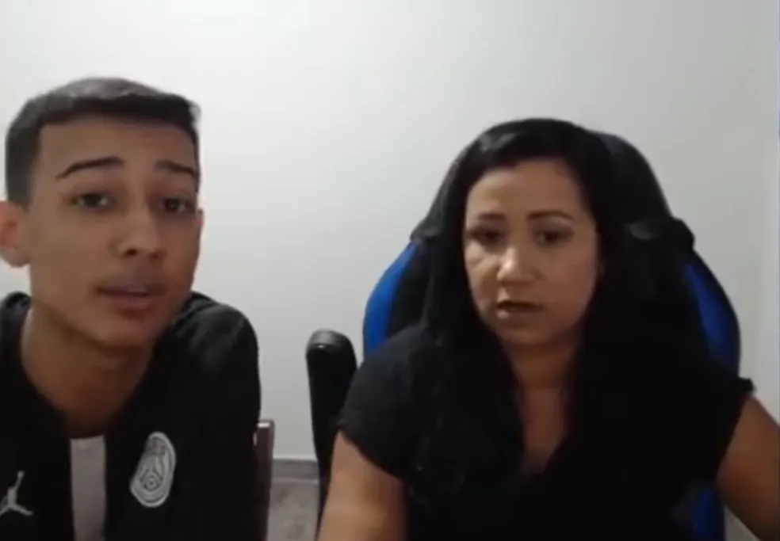

BAK 
2022 m 2018, o carioca entrou para o time da B4stardos, atual B4, e se mudou para São Paulo. Foi lá, junto da organização, que Bak ficou conhecido como o Rei da NFA, organizadora de torneios de Free Fire voltados para os emuladores. Além de ter conquistado as duas primeiras temporadas da Liga NFA, Bak ainda foi eleito o MVP (jogador mais valioso) da Season 2 e venceu a primeira edição da Copa NFA.
Nossa Missão é: Nossa Missão é: O sucesso do jogador atraiu os olhares da LOUD, que em novembro de 2019 propôs que ele fizesse parte da NOISE, equipe de emuladores da organização. No time de Bruno “PlayHard” Oliveira, Bak obteve ainda mais sucesso, conquistando mais uma Liga NFA e uma Copa NFA, além da La Copa, da Liga LBR e da Liga BDL.